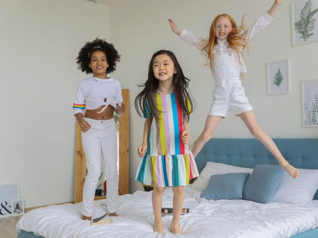

UNIT 36 · VOCABULARY
其他動詞 (2)
Other verbs (2)
37 個單字聽・唸・用
本單元單字一覽
日常動作的動詞，共 37 個（bring 到 kill）。很多是不規則動詞，三態要一起背。
bringbrushcarrycatchcheatchooseclapclosecomecollectcorrectcopycountcovercrycutdigdefinedropenterfeedfightfollowfrygogrowhandhanghelphitholdhunthurryjumpkickknockkill
每個字都有 🔊，先聽發音、跟著唸，再看例句。
單字 1–4
🎒
bring
帶來v.
Please bring your textbook tomorrow.
明天請帶課本來。
明天請帶課本來。

brush
刷v.
Brush your teeth after every meal.
每餐飯後都要刷牙。
每餐飯後都要刷牙。

carry
提；搬；帶著v.
Can you help me carry this box?
你可以幫我搬這個箱子嗎？
你可以幫我搬這個箱子嗎？
🧤
catch
抓住；趕上v.
Hurry up, or you can't catch the bus.
快一點，不然你趕不上公車。
快一點，不然你趕不上公車。
單字 5–8
🙅
cheat
欺騙；作弊v.
Never cheat on a test.
考試絕對不要作弊。
考試絕對不要作弊。
👆
choose
選擇v.
Choose the one you like.
選你喜歡的那一個。
選你喜歡的那一個。

clap
拍手v.
Everyone clapped for the new student.
大家為新同學拍手。
大家為新同學拍手。
🚪
close
關上；闔上v.
Please close the door.
請關門。
請關門。
單字 9–12
🏃
come
來v.
Can you come to my party?
你能來我的派對嗎？
你能來我的派對嗎？

collect
收集v.
My brother collects stamps.
我弟弟收集郵票。
我弟弟收集郵票。
✏️
correct
訂正；改正v.
The teacher corrected our mistakes.
老師訂正我們的錯誤。
老師訂正我們的錯誤。
📑
copy
抄襲；複製v.
Don't copy other people's homework.
不要抄別人的作業。
不要抄別人的作業。
單字 13–16

count
數；計算v.
My little sister can count from 1 to 100.
我妹妹會從 1 數到 100。
我妹妹會從 1 數到 100。
🏔️
cover
覆蓋v.
The mountain is covered with snow.
山上覆蓋著雪。
山上覆蓋著雪。

cry
哭；大叫v.
The baby cries when she is hungry.
寶寶餓了就會哭。
寶寶餓了就會哭。

cut
切；剪v.
I cut my finger with a knife.
我用刀切到手指了。
我用刀切到手指了。
單字 17–20

dig
挖v.
The dog is digging a hole.
狗正在挖洞。
狗正在挖洞。
📖
define
下定義v.
Can you define this word?
你能為這個字下定義嗎？
你能為這個字下定義嗎？
🍂
drop
掉落；滴v.
Leaves drop from the trees in fall.
秋天樹葉從樹上掉下來。
秋天樹葉從樹上掉下來。
🚪
enter
進入v.
Please take off your shoes before you enter the house.
進屋前請脫鞋。
進屋前請脫鞋。
單字 21–24

feed
餵v.
Don't feed the animals in the zoo.
不要餵動物園裡的動物。
不要餵動物園裡的動物。
🥊
fight
打架；奮鬥v.
The two boys fought over a toy.
兩個男孩為了一個玩具打架。
兩個男孩為了一個玩具打架。
👣
follow
跟隨；遵守v.
Follow me, and I'll show you the way.
跟我來，我帶你去。
跟我來，我帶你去。
fry
煎；炸v.
Mom is frying eggs in the kitchen.
媽媽在廚房煎蛋。
媽媽在廚房煎蛋。
單字 25–28
🚶
go
去v.
I go to school by bus.
我搭公車上學。
我搭公車上學。
🌱
grow
成長；種植v.
Farmers grow rice in the fields.
農夫在田裡種稻。
農夫在田裡種稻。
🤲
hand
交出；遞v.
Please hand in your homework.
請交作業。
請交作業。

hang
掛v.
We hung the picture on the wall.
我們把畫掛在牆上。
我們把畫掛在牆上。
單字 29–32
🤝
help
幫忙v.
Can you help me with my math?
你可以幫我做數學嗎？
你可以幫我做數學嗎？

hit
打；撞v.
He hit the ball very hard.
他用力擊球。
他用力擊球。

hold
握著；舉辦v.
She is holding a baby in her arms.
她懷裡抱著一個嬰兒。
她懷裡抱著一個嬰兒。
🦁
hunt
打獵v.
Lions hunt for food at night.
獅子在晚上獵食。
獅子在晚上獵食。
單字 33–36

hurry
趕快v.
Hurry up! We're late.
快一點！我們遲到了。
快一點！我們遲到了。

jump
跳v.
The kids are jumping on the bed.
孩子們在床上跳。
孩子們在床上跳。

kick
踢v.
He kicked the ball into the goal.
他把球踢進球門。
他把球踢進球門。
knock
敲v.
Someone is knocking on the door.
有人在敲門。
有人在敲門。
單字 37–37
⚠️
kill
殺死v.
The lion killed a zebra.
獅子殺死了一隻斑馬。
獅子殺死了一隻斑馬。
不規則動詞三態
| 原形 | 過去式 | 過去分詞 |
|---|---|---|
| bring | brought | brought |
| catch | caught | caught |
| choose | chose | chosen |
| come | came | come |
| cut／hit | cut／hit | cut／hit |
| dig | dug | dug |
| feed | fed | fed |
| fight | fought | fought |
| go | went | gone |
| grow | grew | grown |
| hang | hung | hung |
| hold | held | held |
規則動詞要注意的拼法
| 規則 | 例 |
|---|---|
| 子音＋y → ied | carry → carried、copy → copied、cry → cried、fry → fried、hurry → hurried |
| 短母音＋一個子音 → 重複字尾 | clap → clapped、drop → dropped |
| V-ing 也要重複字尾 | cut → cutting、dig → digging、hit → hitting |
快問快答：中文 → 英文
1帶來bring
2提；搬；帶著carry
3欺騙；作弊cheat
4拍手clap
5來come
6訂正；改正correct
7數；計算count
8哭；大叫cry
快問快答：英文 → 中文
1dig挖
2drop掉落；滴
3feed餵
4follow跟隨；遵守
5go去
6hand交出；遞
7help幫忙
8hold握著；舉辦
學完了！接下來
複習方法
review
- 回到「📗 單字卡」，按「遮中文」自己考自己
- 再按「遮英文」，看中文說出英文
- 每個例句跟著 🔊 唸一次
準備好了
- 按右上角「📝 前往測驗」
- 測驗錯的題目要訂正到全對
- 訂正完成補送 1 點